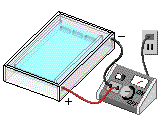

Place the top on the electrophoresis chamber and connect the electrical leads to the gel. Double check that the wells are at the negative electrode.
When you turn on the power, the DNA/tracking dye combination will begin to move toward the positive electrode.
